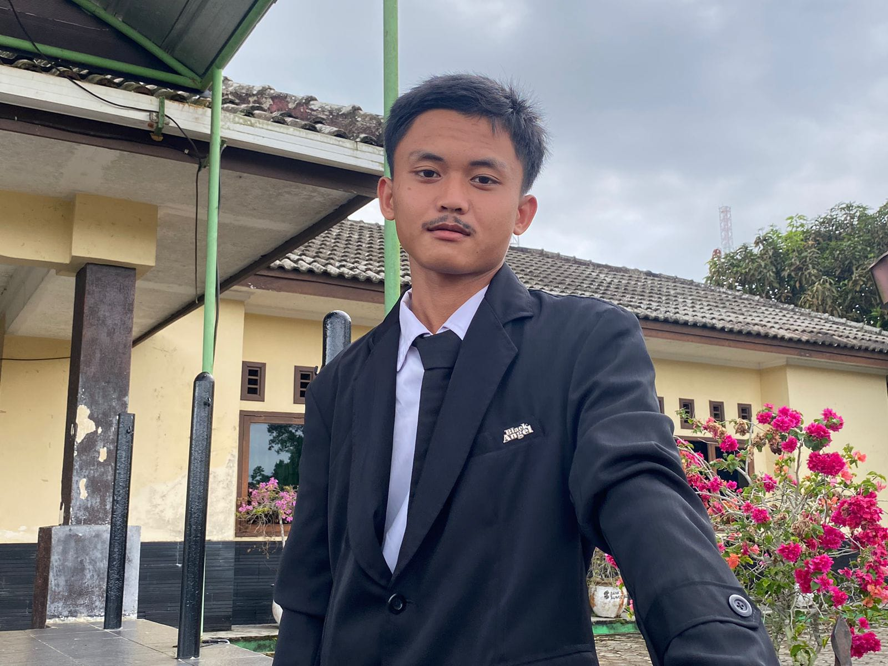

01
HTML
Menyusun struktur halaman web dengan elemen yang tepat dan teratur.
Dasar · Sedang dipelajari
HALO, PERKENALKAN SAYA
Saya tertarik pada dunia teknologi dan pengembangan web. Saat ini saya terus belajar, mencoba hal baru, dan membangun kemampuan melalui proyek-proyek sederhana. Dengan senantiasa berusaha dan berdoa kepada ALLAH SWT. Saya yakin pasti bisa mencapai tujuan saya untuk menjadi seorang developer yang handal dimasa depan. Yakinkan dengan Iman, Usahakan dengan Ilmu, Sampaikan dengan Amal.

Belajar hari ini, berkarya esok hari.
01 / TENTANG SAYA
Halo! Saya Ardiansyah, mahasiswa Ilmu Komputer yang sedang membangun fondasi di bidang pemrograman dan teknologi.
Saya percaya kemampuan tidak dibangun dalam satu malam. Karena itu, saya berusaha belajar secara bertahap, memahami konsep dasarnya, lalu mempraktikkannya melalui tugas kuliah dan proyek kecil.
Portofolio ini menjadi tempat untuk memperkenalkan diri, mencatat proses belajar, dan menampilkan hasil karya yang akan terus saya kembangkan.
02 / KEAHLIAN
Daftar ini menggambarkan fokus belajar saya saat ini, bukan klaim sebagai ahli.
Menyusun struktur halaman web dengan elemen yang tepat dan teratur.
Mengatur tata letak, warna, tipografi, dan tampilan responsif.
Mengenal logika pemrograman dan menambahkan interaksi pada web.
Melatih cara berpikir sistematis saat memahami dan menyelesaikan masalah.
Catatan: indikator di atas hanya ilustrasi perkembangan belajar dan bisa kamu sesuaikan dengan kemampuan sebenarnya.
03 / PROYEK PILIHAN
Contoh proyek awal yang bisa dikembangkan. Ganti isi kartu ini dengan tugas atau karya yang benar-benar pernah kamu buat.
Website untuk memperkenalkan identitas, minat, dan perjalanan belajar saya di bidang teknologi.
Sedang dikembangkan ↗Tempat untuk mendokumentasikan latihan coding, catatan materi, dan program sederhana dari perkuliahan.
Dapat ditambahkan ↗Ruang untuk menampilkan eksperimen kecil dan ide proyek baru seiring bertambahnya pengalaman.
Rencana pengembangan ↗04 / KONTAK
Terima kasih sudah mengunjungi portofolio saya. Silakan hubungi saya melalui email atau media sosial setelah informasi kontak di bawah diperbarui.